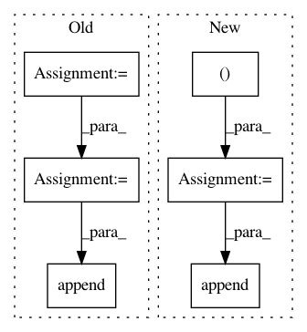

4a4e470321085513f38283c5aa2fd4460b80f58d,chainercv/datasets/pascal_voc/voc_detection_dataset.py,VOCDetectionDataset,get_example,#VOCDetectionDataset#Any#,80
Before Change
continue
bndbox_anno = obj.find("bndbox")
bbox_elem = [int(bndbox_anno.find("xmin").text),
int(bndbox_anno.find("ymin").text),
int(bndbox_anno.find("xmax").text),
int(bndbox_anno.find("ymax").text)]
// make pixel indexes 0-based
bbox_elem = [float(b - 1) for b in bbox_elem]
name = obj.find("name").text.lower().strip()
label.append(self.labels.index(name))
bbox.append(bbox_elem)
bbox = np.stack(bbox).astype(np.float32)
label = np.stack(label).astype(np.int32)
// Load a image
After Change
bndbox_anno = obj.find("bndbox")
// substract 1 to make pixel indexes 0-based
bbox.append([
int(bndbox_anno.find(tag).text) - 1
for tag in ("xmin", "ymin", "xmax", "ymax")])
name = obj.find("name").text.lower().strip()
label.append(self.labels.index(name))
bbox = np.stack(bbox).astype(np.float32)
label = np.stack(label).astype(np.int32)
In pattern: SUPERPATTERN
Frequency: 3
Non-data size: 6
Instances
Project Name: chainer/chainercv
Commit Name: 4a4e470321085513f38283c5aa2fd4460b80f58d
Time: 2017-03-15
Author: Hakuyume@users.noreply.github.com
File Name: chainercv/datasets/pascal_voc/voc_detection_dataset.py
Class Name: VOCDetectionDataset
Method Name: get_example
Project Name: keras-team/keras
Commit Name: 56e940e9634764e15a211e5642b3e9a838d075ff
Time: 2021-01-28
Author: scottzhu@google.com
File Name: keras/callbacks.py
Class Name: TensorBoard
Method Name: _push_writer
Project Name: dmlc/gluon-nlp
Commit Name: 090944e816fd3ff8e861fba4452851e0a901491d
Time: 2019-01-28
Author: linhaibin.eric@gmail.com
File Name: scripts/language_model/large_word_language_model.py
Class Name:
Method Name: train